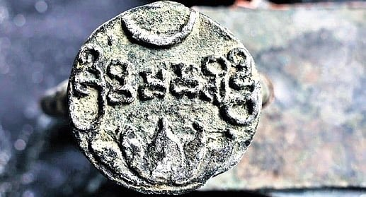
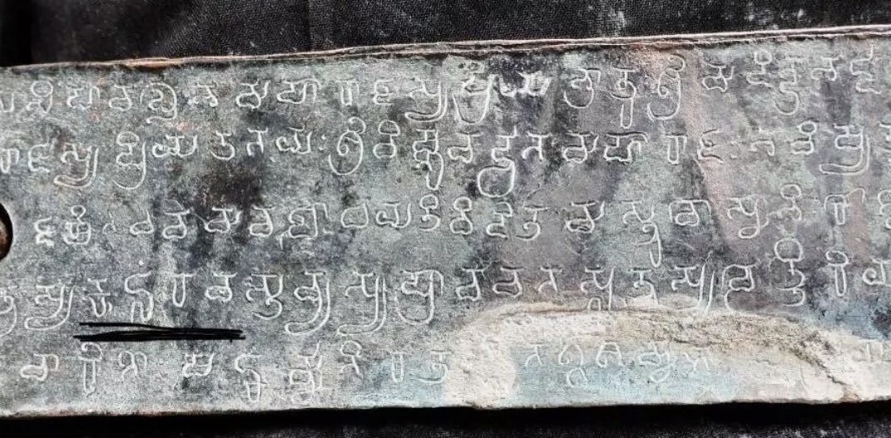
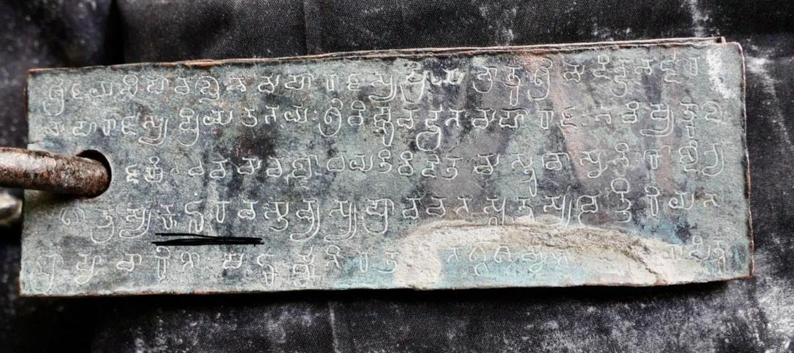

The name: Kumturu → Gomturu → Gunturu → Guntur
Guntur did not receive its name in one hour. The name grew, as names do, in the mouths of people and in the hands of scribes. What we can show, from copper and from later stone, is a living chain.
Kumturu in 669 CE. Gomturu — also written Gonturu — in the tenth century, and then in regional inscriptions into the fourteenth. Gunturu as the next historic form. Guntur as the English and administrative name we use today.
That is the spine of this page. The rest is how we know it.
Kumturu, 669 CE
In August 2026 the Archaeological Survey of India announced the earliest known epigraphical mention of Guntur. It stands in a three-leaf copper-plate charter issued by the Eastern Chalukya king Vishnuvardhana II, in his first regnal year. The plates name the place Kumturu.
The charter is in Sanskrit, written in Telugu characters of that age. The date in the text is Magha Shuddha 15, coinciding with a lunar eclipse — converted as 22 January 669 CE. The seal bears a lotus and crescent, and the legend Sri Vishamasiddhi. The plates are held by Ameet Lomte, at Pune. The reading was given by ASI Director (Epigraphy) Dr K. Munirathnam Reddy.
Earlier printed lists gave Vishnuvardhana II as 673–682; ASI dates this charter’s first year to 669. This site follows the plates.
The 669 plates, as ASI stated them
| Issuer | Vishnuvardhana II, Eastern Chalukya |
|---|---|
| Regnal year | First |
| Date in the text | Magha Shuddha 15, with a lunar eclipse |
| Converted civil date | 22 January 669 CE |
| Language | Sanskrit |
| Script | Telugu characters (archaic Telugu / Telugu-Kannada family of the period) |
| Form | Three-leaf copper-plate charter |
| Place-name | Kumturu |
| Seal | Lotus and crescent; legend Sri Vishamasiddhi |
| Present holder | Ameet Lomte, Pune, Maharashtra |
| ASI authority | Director (Epigraphy) K. Munirathnam Reddy |
| News dates | 22 August 2026 (The New Indian Express, Deccan Chronicle); 24 August 2026 (The Hindu) |
The grant’s inner contents — who received land, in which vishaya, what the boundaries of Kumturu were — have not yet been published plate by plate. The name, the king, the year, and the seal are what the 2026 briefing placed in public view.



Gomturu / Gonturu: the Ederu plates
Until August 2026, the official district memory named a tenth-century Vengi Chalukya grant as the earliest reference to the town. That grant is still the great medieval witness. It is no longer the earliest.
Five copper plates were found at the close of 1871, buried in a field at Ederu, near Akiripalle, then in the Kistna District. The official district page spells the same find Idern. There is one grant, not two.
Amma I — Ammaraja I, also called Rajamahendra — orders the householders of Kanderuvadi-vishaya that the village called Gonturu, together with twelve hamlets, tax-free, is given to his military officer Bhandanaditya, also called Kundaditya, of the Pattavardhini family. The official profile dates Ammaraja I to 922–929. ASI’s 2026 briefing uses the form Gomturu, and says that form then appears in regional inscriptions from the tenth to the fourteenth century.
This site follows the district and ASI: Ederu / Idern is the later epigraphical mention of the town, as Gomturu / Gonturu.
The district page also mentions two later inscriptions of 1147 and 1158.
Gunturu, then Guntur
ASI names Gunturu as the next historic form after Gomturu. Guntur is the modern English and administrative name — the district, the town, the way the world writes us now.
In official memory the Sanskrit equivalent is Garthapuri, and the Telugu Guntlapuri. Those are learned and beloved names. They are not the words on the 669 plates.
A beloved local meaning
People here have long said that the word owes its origin to gundu, a rock; to gunta, a pond; or to kunta, a land measure given as a third of an acre. The district records those readings as opinions. This site records them the same way.
They are not a proved root. They are a meaning the countryside itself makes easy to love. Eastern Chalukya charters of the ninth and tenth centuries already mention guptas — tanks and ponds — as a standing feature of the Krishna–Guntur rural landscape. That does not prove the etymology. It does make a pond-town reading feel at home in the same fields.
Lead, then, with what is written: Kumturu in 669, Gomturu in the tenth century, Gunturu after that, Guntur today. Keep gunta and Garthapuri beside the name, as the meaning Guntur people have carried in their own speech.